Configuration is just a means to an end for a desired outcome.
This project started with 2 configuration-based OKRs assigned to me. As I became familiar with the user needs for these two tickets, I realized that the problem was much larger.
I audited the entire Datadog platform for anywhere services could be configured, and discovered 8 different screens, flows, and pages, not including configurations in local code and environment variables.
I then wrote a design proposal for a single hub for service configuration, from initial instrumentation to complete observability. I used this proposal, which I called “Service Lifecycle Management,” to build momentum and excitement, and ideally get PM and Engineering resource approval.
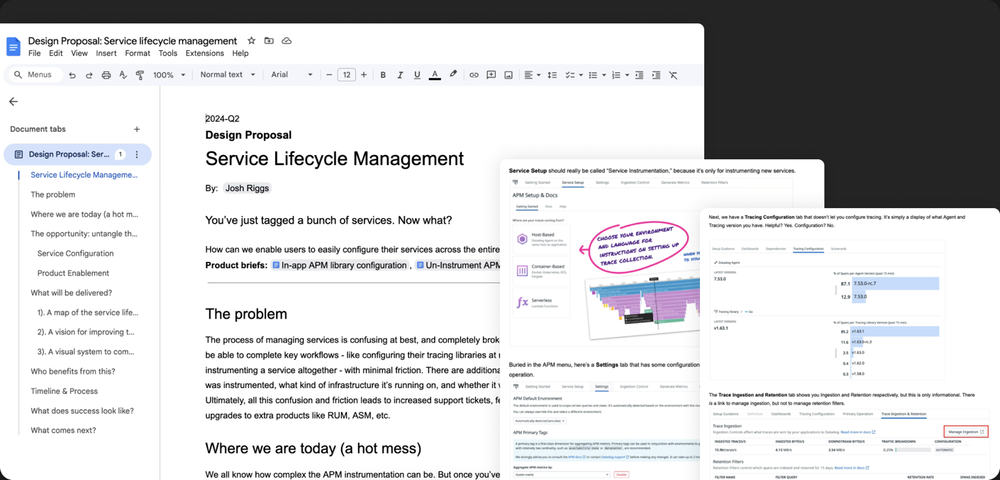
Discovery & Alignment
As the idea gained momentum, I partnered with a designer whose team was building an experience for automatically discovering services on infrastructure.
Both problems shared configuration as a common thread, so we mapped the entire lifecycle of a service: from discovery on infrastructure, to instrumentation with the Datadog agent, through the various states of telemetry and observability.
This lifecycle map became central to our updated proposal doc, which we used to estimate the work and get buy-in from PM and Engineering leadership.
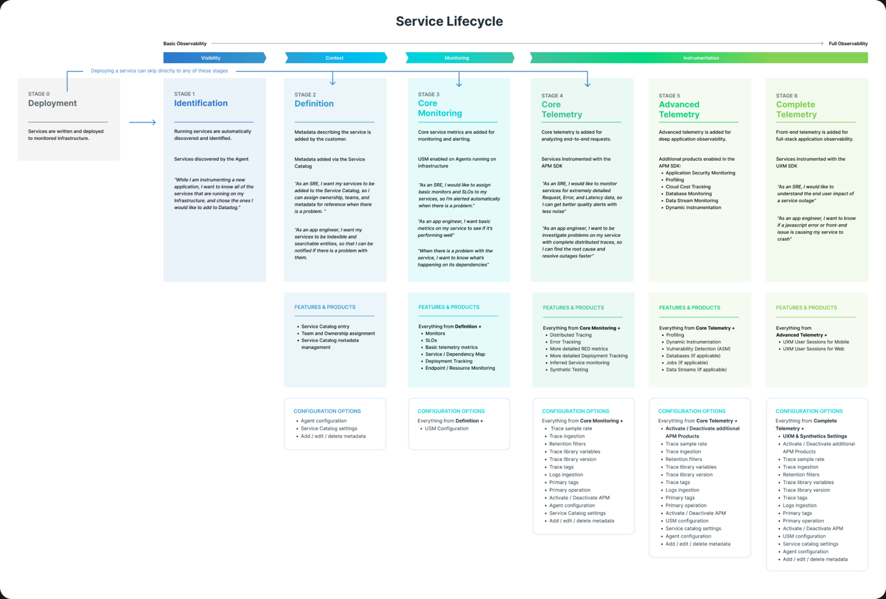
The final alignment step was a workshop I led with core stakeholders to define user stories and requirements.
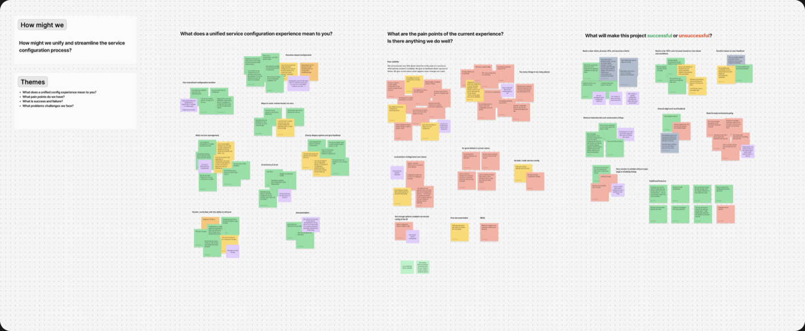
Initial Design Explorations
Now that we had alignment, commitment, and excitement, I wrote our primary and secondary user stories, and mapped them out as user flows.
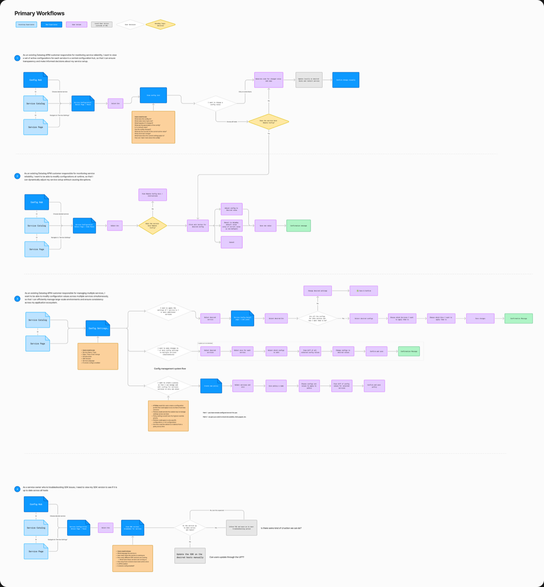
Next, I explored several different iterations on those core user flows, with mockups and prototypes of varying fidelity. I led pair design sessions with other team leads, and a weekly design meeting with key stakeholders. Throughout the process, I got feedback from internal Datadog users, early access customers, and our lead Support Engineer.
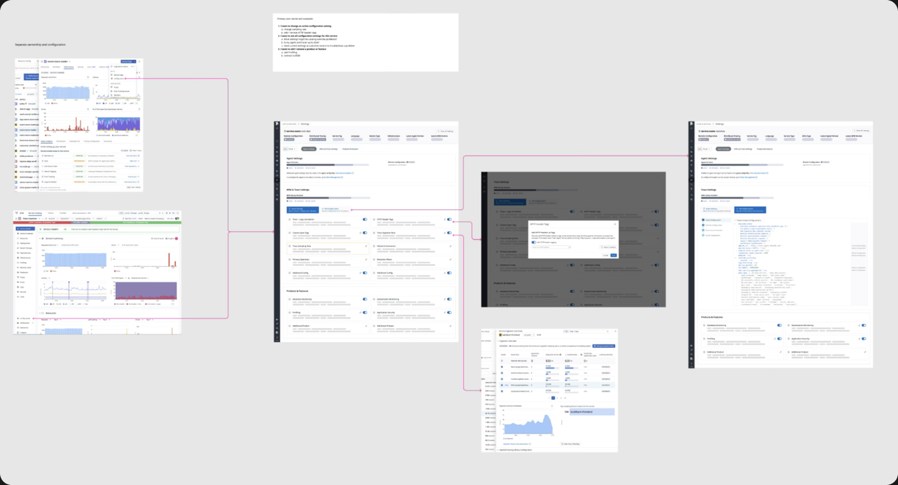
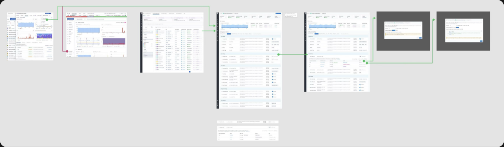
Once the team and I were aligned on the core flow designs, I designed a mid-fi prototype to get the first round of user and internal stakeholder feedback.
I designed this concept around the settings being grouped into 3 primary categories: Instrumentation, Service Settings, and Product & Features. Since our research showed most users are looking for specific features in these categories, my hope was to reduce cognitive load by separating them into tabs.
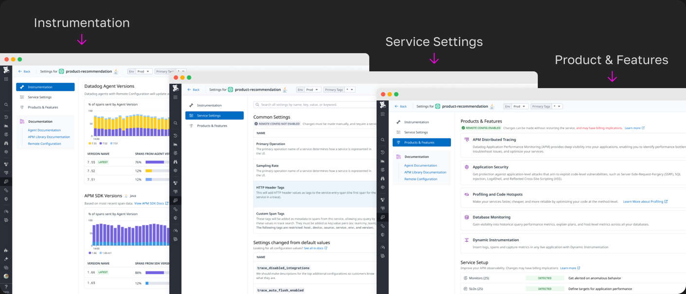
Next, I presented the prototype to executive design, product, and engineering leadership. We received good feedback, but were also challenged on some things. They really loved seeing all the once separated configurations together in one place. On the other hand, the 3-category grouping was a hard sell.
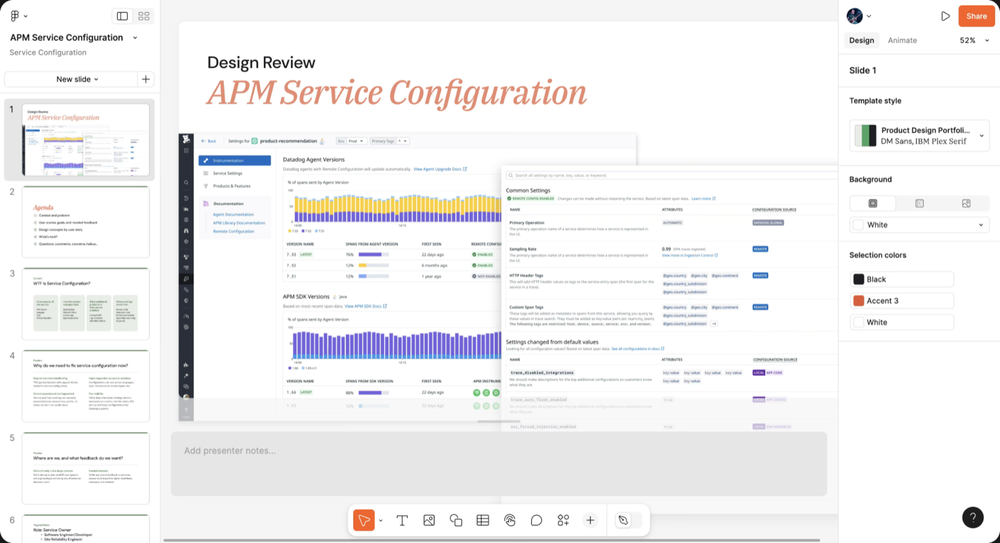
Final Iteration Designs
Unified Settings Page
After compiling all the stakeholder and user feedback we had so far, I redesigned the single-service configuration experience to be a “Unified Service Settings page.” Every service would have one, and it would be easily accessible from a Service Detail page.
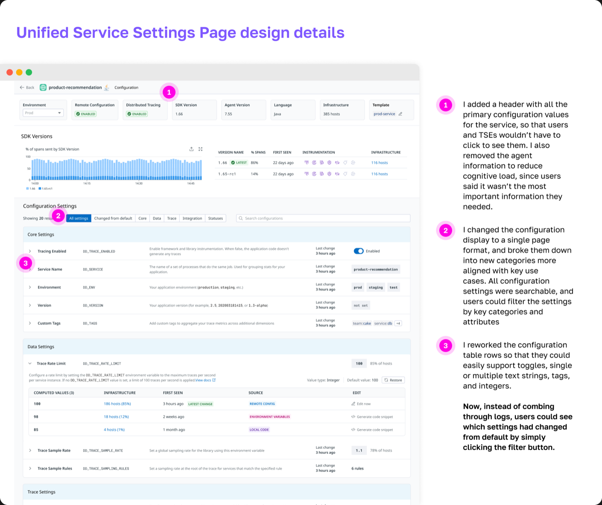
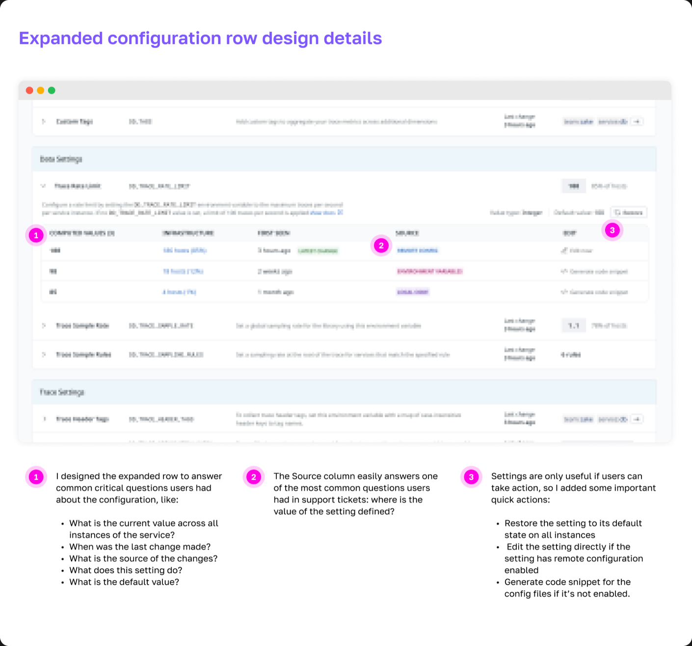
Settings Hub
When the single service experience was complete, I designed a hub where users could access configurations for all of their services.
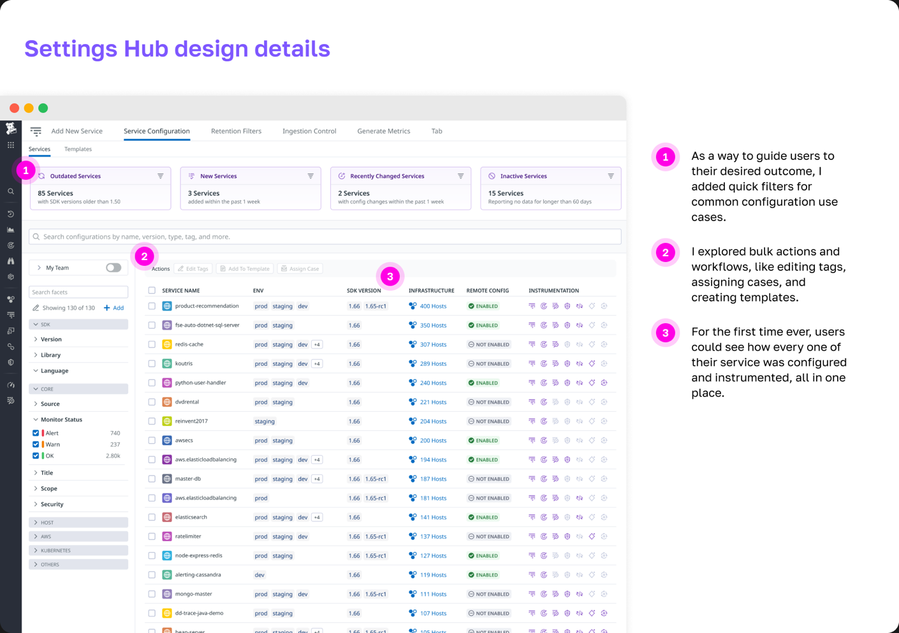
What impact did my design have?
- Internal and external early access users had very positive feedback.
- I mapped service instrumentation in a way that hadn’t been done before at Datadog, and this map was shared widely throughout the APM engineering org.
- Users finally had visibility into how their services were configured in one single place.